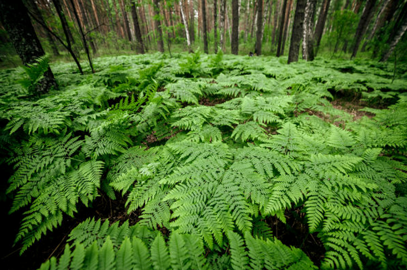
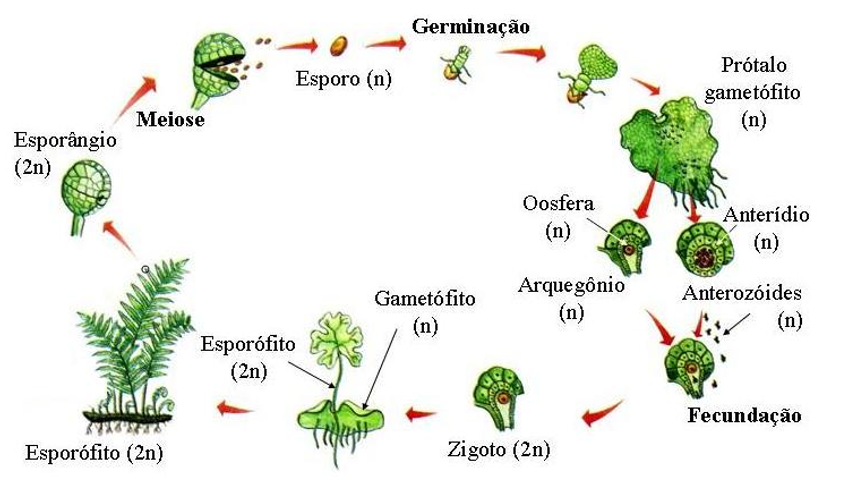

Características
- Primeiros vegetais vasculares ou traqueófitos;
- Rápido
transporte de seiva;
- Com órgãos verdadeiros - raiz, caule
(risoma), folhas (divididas em folíolos);
- Criptógamos -
sem flor, sem fruto e semente.
- Cormófitos (plantas com
caule e raiz) e embriófitos (planta que desenvolve embrião durante
o processo de reprodução).
Habitat:
Terra, locais úmidos e sombreados. Algumas em água doce,
mas nunca no mar.

Ciclo Reprodutivo
- Alternância de gerações;
- Ciclo haplodiplobionte;
-
Esporófito 2n clorofilado independente
duradouro (permanente);
- Gametófito n
clorofilado independente
transitório (temporário);
- Fecundação
dependente de água.
Produção de esporos
- Isoporadas = esporos iguais
- Heterosporadas =
esporos diferentes - migrósporos (masculino); magrósporos ou
megásporos (feminino).
Folha composta por folíolos / caule
do tipo rizoma / esporângios (produtor de esporos).

Classificação
Dois filos principais: Lycopodiophyta e Monilophyta.